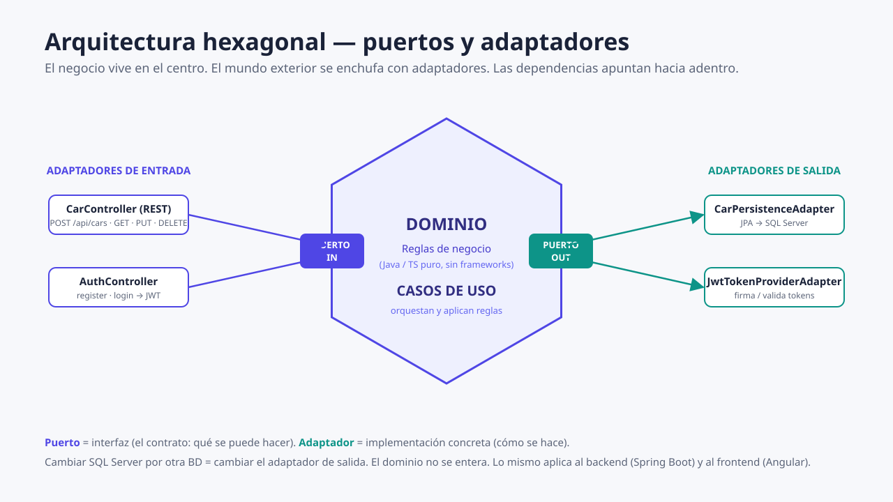
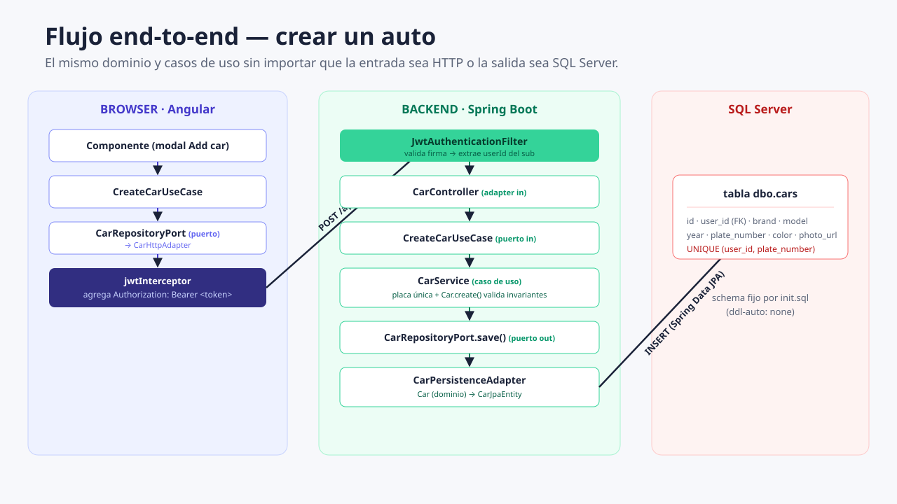

Requisito original
Usuarios + autos propios
- Registro y login con JWT
- CRUD de autos por usuario
- Spring Boot + SQL Server
- Frontend solicitado en React
Fuente: idea_inicial.md
01 Punto de partida
Objetivo: comprender qué construye el sistema y cómo seguir una petición de punta a punta.
Una guía visual para entender arquitectura hexagonal, Spring Boot, JWT, Angular y SQL Server sin memorizar archivos aislados.
02 Del requisito al producto
Objetivo: separar la necesidad de negocio de las decisiones tecnológicas.
Requisito original
Fuente: idea_inicial.md
Producto construido
Se eligió Angular 18 standalone y se mantuvo Spring Boot, SQL Server y JWT. Es una desviación consciente respecto del framework pedido, no un detalle invisible.
03 Vista de sistema
Objetivo: ubicar cada tecnología y reconocer los límites del estado actual.
Renderiza la interfaz y envía HTTP.
localhost:4200Autentica, ejecuta reglas y expone la API.
localhost:8080Persiste usuarios, hashes y autos.
localhost:1433README.md y DOCUMENTACION_PROCESO.md describen una topología con Apple container. scripts/tools/ existe como directorio, pero actualmente no hay scripts auxiliares ejecutables para iniciar el sistema; por eso esta presentación no afirma que exista arranque en un comando.
04 Arquitectura
Objetivo: entender por qué el negocio queda en el centro.
Significa que el núcleo define qué necesita, mientras los detalles externos se conectan mediante contratos.
Arquitectura hexagonal pragmática: el proyecto protege las reglas principales, pero acepta anotaciones Spring en servicios de aplicación para evitar complejidad ceremonial.

diagrams/01-hexagonal.svg05 Vocabulario esencial
Objetivo: reconocer las tres responsabilidades sin confundirlas.
Car, User, Email e invariantes.
CarRepositoryPort, TokenProviderPort y casos de uso.
CarPersistenceAdapter, controladores, JWT y localStorage.
06 Backend
Objetivo: leer la estructura del backend por responsabilidad y módulo.
backend/src/main/java/com/example/cars/Registro, login, BCrypt, JWT, filtro y configuración de seguridad.
Dominio del auto, CRUD, puertos y persistencia.
Usuario, email y repositorio de usuarios.
Errores, CORS, OpenAPI y manejo transversal.
backend/src/main/java/com/example/cars/CarsApplication.java@SpringBootApplication
public class CarsApplication {
public static void main(String[] args) {
SpringApplication.run(CarsApplication.class, args);
}
}
07 Dominio
Objetivo: detectar invariantes y propiedad dentro del modelo.
Car protege datos válidosTodo auto necesita ownerId.
Marca, modelo, placa y color no pueden estar vacíos.
El año queda entre 1886 y el año siguiente.
belongsTo permite aplicar propiedad en el caso de uso.
backend/.../cars/domain/Car.javapublic boolean belongsTo(UserId userId) {
return ownerId.equals(userId);
}
private void applyDetails(...) {
this.brand = requireText(brand, "Brand");
int maxYear = Year.now().getValue() + 1;
if (year < 1886 || year > maxYear) {
throw new InvalidInputException(...);
}
}
08 Distinción crítica
Objetivo: separar el modelo de negocio del modelo de persistencia.
Car y CarJpaEntityModelo de dominio
CarCarId y UserId.@Entity.cars/domain/Car.java
Modelo de base de datos
CarJpaEntity@Entity y @Column.infrastructure/.../CarJpaEntity.java
CarPersistenceAdapter.java · traducción de infraestructura a dominioreturn Car.reconstitute(CarId.of(e.getId()), UserId.of(e.getUserId()),
e.getBrand(), e.getModel(), e.getYear(),
e.getPlateNumber(), e.getColor(), e.getPhotoUrl());
09 Persistencia
Objetivo: seguir la dependencia desde el caso de uso hasta SQL Server.
CarService depende de CarRepositoryPort.CarPersistenceAdapter implementa ese puerto.CarJpaRepository ejecuta operaciones JPA.users y cars.CarRepositoryPort.javapublic interface CarRepositoryPort {
Car save(Car car);
List<Car> findAllByOwner(UserId owner);
boolean existsByOwnerAndPlate(
UserId owner, String plateNumber);
}
database/init.sqlCREATE UNIQUE INDEX uq_cars_user_plate
ON dbo.cars(user_id, plate_number);
10 Registro
Objetivo: entender por qué una contraseña se hashea antes de persistir.
password_hashbackend/.../auth/application/service/RegisterUserService.javaString hash = passwordHasher.hash(command.password());
User saved = userRepository.save(User.register(command.name(), email, hash));
String token = tokenProvider.generateToken(saved.id());
matches.11 Login
Objetivo: recorrer la autenticación desde el controlador hasta la respuesta.
/api/auth/loginAuthController convierte el JSON en LoginCommand.
LoginService usa UserRepositoryPort.
passwordHasher.matches(...) valida sin recuperar la clave original.
El identificador del usuario queda en sub.
LoginService.javaif (!passwordHasher.matches(command.password(), user.passwordHash())) {
throw new InvalidCredentialsException();
}
String token = tokenProvider.generateToken(user.id());
12 JWT
Objetivo: distinguir contenido, firma y tiempo de vida del token.
Describe el tipo de token y el algoritmo de firma.
subID del usuario.
iatMomento de emisión.
expExpiración: una hora.
application.yml + JwtTokenProviderAdapter.javaexpiration-ms: ${JWT_EXPIRATION_MS:3600000}
.subject(String.valueOf(userId.value()))
.issuedAt(Date.from(now))
.expiration(Date.from(now.plusMillis(expirationMs)))
.signWith(key)
Alcance actual: sin roles, refresh tokens ni revocación.
13 Spring Security
Objetivo: ver cómo un Bearer token se convierte en principal autenticado.
Authorization: Bearer ….sub se transforma en UserId.SecurityContextHolder.@AuthenticationPrincipal Long userId.La política es stateless: no existe sesión del servidor que recordar entre peticiones.
JwtAuthenticationFilter.javavar authentication =
new UsernamePasswordAuthenticationToken(
userId.value(), null, List.of());
SecurityContextHolder.getContext()
.setAuthentication(authentication);
SecurityConfig.java.sessionManagement(sm -> sm.sessionCreationPolicy(
SessionCreationPolicy.STATELESS))
.authorizeHttpRequests(auth -> auth
.requestMatchers("/api/auth/**", "/swagger-ui/**",
"/swagger-ui.html", "/v3/api-docs/**").permitAll()
.anyRequest().authenticated())
14 Distinción crítica
Objetivo: separar “quién realiza la petición” de “qué puede hacer”.
AUTENTICACIÓN
Spring Security valida el JWT y establece el ID del usuario como principal.
AUTORIZACIÓN
CarService.requireOwnedCar carga el auto y comprueba car.belongsTo(owner).
CarService.javaif (!car.belongsTo(owner)) {
throw new CarNotFoundException(carId);
}
Devolver 404 evita confirmar que existe un recurso de otro usuario.
15 Frontend
Objetivo: reconocer la misma separación de responsabilidades en Angular.
frontend/src/app/Car, CarInput, AuthSession.
Puertos y casos de uso de autenticación y autos.
HTTP, interceptor JWT y sesión en localStorage.
Login, registro, lista y formulario.
Guards de rutas.
frontend/src/app/app.config.ts{ provide: AuthRepositoryPort, useClass: AuthHttpAdapter },
{ provide: CarRepositoryPort, useClass: CarHttpAdapter },
{ provide: SessionStoragePort, useClass: LocalStorageSessionAdapter }
16 Sesión del navegador
Objetivo: distinguir almacenamiento, transporte y navegación.
LocalStorageSessionAdapterGuarda y recupera car-app.session.
jwtInterceptorAdjunta Authorization: Bearer ….
authGuardRedirige a /login si no hay token.
frontend/.../http/jwt.interceptor.tsconst token = inject(SessionStoragePort).token();
return next(token
? request.clone({ setHeaders: { Authorization: `Bearer ${token}` } })
: request);
localStorage simplifica la persistencia entre recargas, pero JavaScript puede leerlo; una vulnerabilidad XSS también podría extraer el token. Exige evitar inyección de contenido y aplicar una política web cuidadosa.
17 Punta a punta
Objetivo: conectar frontend, backend y almacenamiento en el login.
Recoge email y contraseña.
Invoca AuthRepositoryPort.
POST a /api/auth/login.
Busca, compara BCrypt y firma JWT.
Guarda AuthSession.
frontend/.../use-cases/auth.use-cases.tsexecute(credentials: Credentials): Observable<AuthSession> {
return this.auth.login(credentials).pipe(
tap((s) => this.session.save(s))
);
}

diagrams/02-flujo-end-to-end.svg18 Petición protegida
Objetivo: seguir una operación de autos y localizar el origen confiable del propietario.
{
"brand": "Toyota",
"model": "Corolla",
"year": 2022,
"plateNumber": "ABC123",
"color": "Blue",
"photoUrl": null
}sub = userIdEl filtro crea el principal.
@AuthenticationPrincipal Long userIdConstruye UserId.of(userId).
CarController.javapublic CarResponse create(@AuthenticationPrincipal Long userId,
@Valid @RequestBody CarRequest request) {
return CarResponse.from(createCar.create(
UserId.of(userId), toCreateCommand(request)));
}
19 Autos
Objetivo: entender cómo el CRUD aplica reglas más allá de guardar datos.
Comprueba placa duplicada para ese propietario antes de guardar.
201 CreatedLista por propietario; un auto ajeno se trata como inexistente.
200 / 404Verifica propiedad y duplicado solo si la placa cambió.
200 / 409Verifica propiedad antes de borrar por ID.
204 / 404Mejora navegación, pero se puede omitir manipulando el navegador.
Es la frontera obligatoria y decide sobre cada petición.
20 Confianza
Objetivo: diferenciar evidencia actual de reportes históricos.
Casos de uso, adaptador HTTP, guard y presentación.
Dominio, propiedad, registro y login sin base de datos.
Un reporte anterior documenta auth → CRUD contra SQL Server real.
Fuentes del backend: backend/src/test/java/... y reportes del proyecto. No se presenta la evidencia histórica como una ejecución actual.
21 Glosario
Objetivo: convertir vocabulario técnico en conceptos recuperables.
Modelo y reglas que describen el problema, independientes de detalles externos.
Contrato que define una capacidad ofrecida o requerida por la aplicación.
Pieza concreta que traduce entre un puerto y una tecnología.
Orquestación de una acción del sistema y sus reglas.
Token compacto firmado con claims de identidad y tiempo.
Transformación unidireccional usada para verificar contraseñas sin guardarlas.
API de persistencia que mapea entidades Java a estructuras relacionales.
Identidad autenticada que Spring Security expone a los controladores.
Función del frontend que añade el token a peticiones HTTP.
Control de navegación del frontend; no sustituye la seguridad del backend.
No hay conceptos que coincidan con esa búsqueda.
22 Cierre
Objetivo: comprobar la capacidad de explicar las decisiones esenciales con palabras propias.
0 de 5 respuestas reveladas
Porque Car expresa reglas del negocio y CarJpaEntity expresa cómo se persiste una fila. Separarlas evita acoplar el dominio a JPA.
El puerto define el contrato; el adaptador es una implementación o traducción concreta para HTTP, JPA, JWT o almacenamiento.
La firma permite detectar cambios y validar al emisor, pero el payload sigue siendo decodificable. Por eso no debe contener secretos.
Del claim sub del JWT verificado, convertido en principal por Spring Security; no del JSON enviado por el cliente.
Porque el guard solo controla navegación en código manipulable del navegador. El backend debe validar token y propiedad en cada petición.
Navegación
Usá Esc para cerrar. El enlace de cada diapositiva puede compartirse.